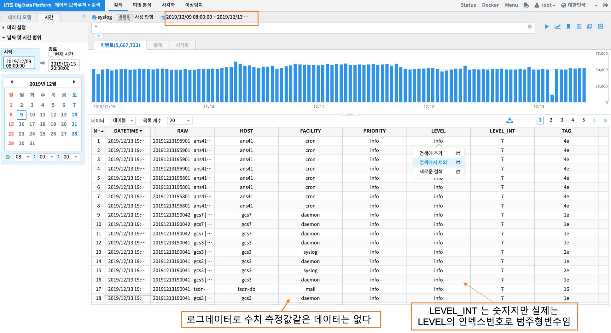
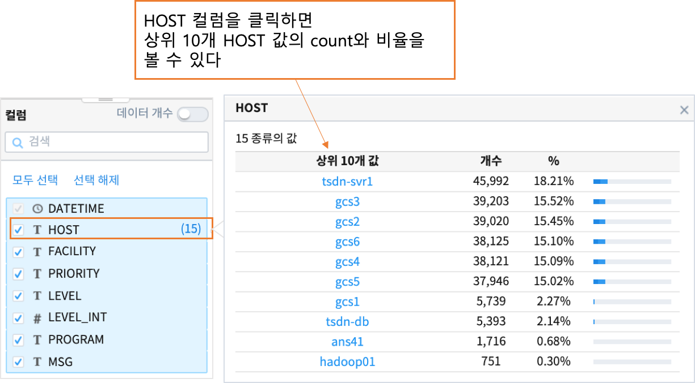
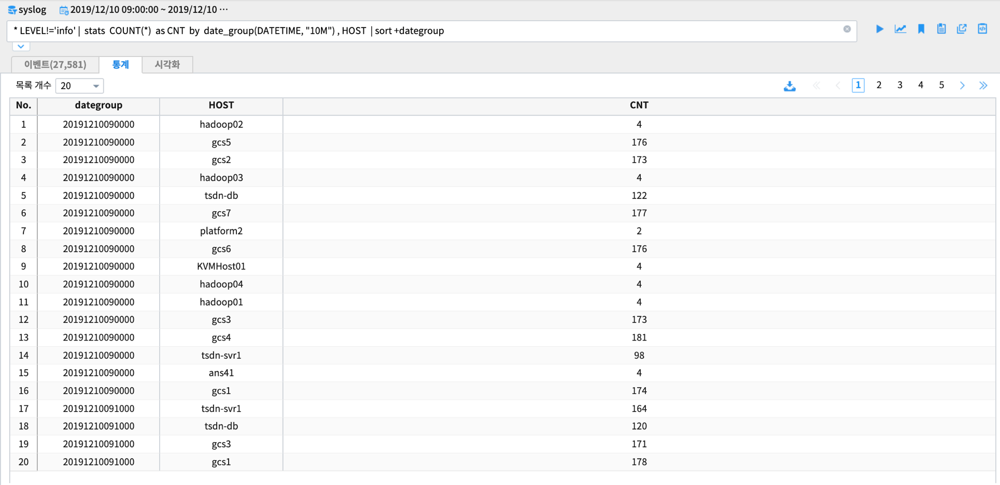
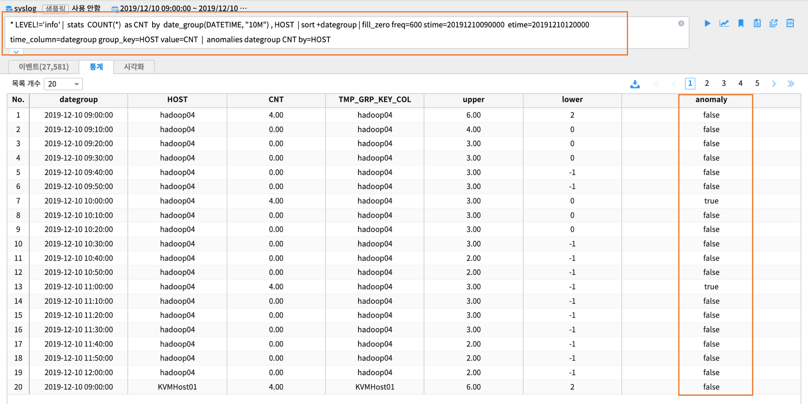
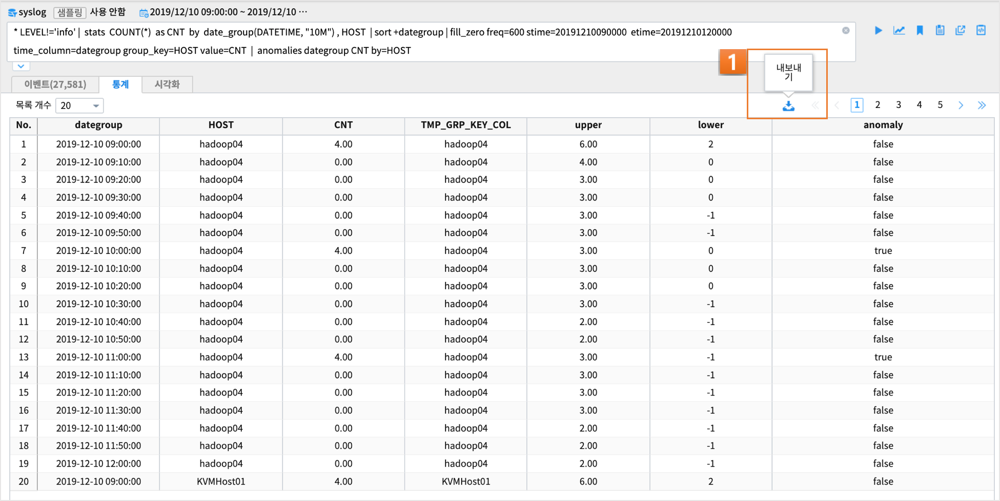
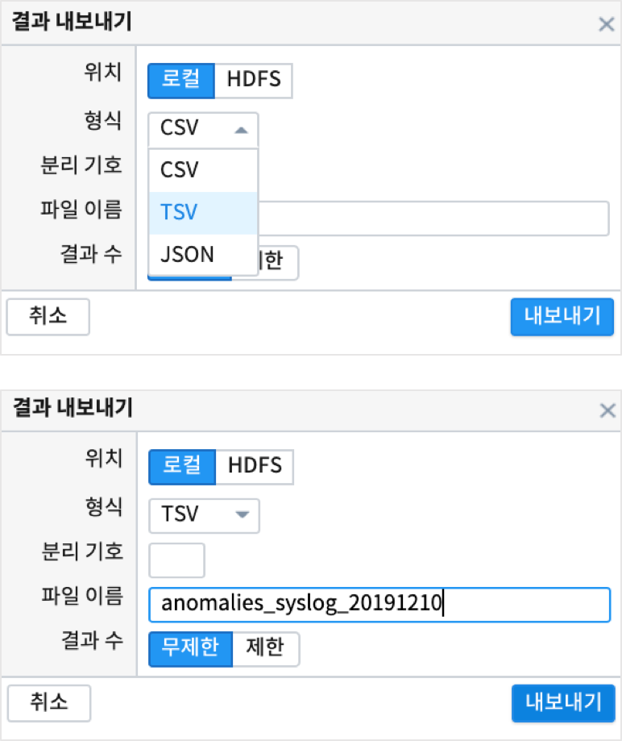

anomalies - 실시간 이상 탐지¶
목차¶
설명
데이터 탐색
anomalies 를 위한 데이터 전처리
실행 결과
결과 해석
설명¶
anomalies 명령어는 대상 데이터중에서 이상치에 해당하는 데이터를 판별해주는 명령어입니다.
이상치를 판단하는 방법으로 사용된 옵션은
basic 옵션 : 단순 통계적 방법으로 normal분포 가정하여 z-score = 1.959964를 벗어난 값을 이상치로 판단 robust 옵션 : Seasonal_Decomposition을 사용한 알고리즘. 계절성, 추세, 잔차 값을 구별하여 잔차 값으로 임계값을 구하여 이상치를 판단
SYSLOG는 수치 측정값이 없는 로그 데이터이므로 1분, 10분 등 단위 시간동안의 집계 count 를 대상으로 이상탐지를 판단합니다.
기본적인 과정은
- 10분 단위 집계 데이터 생성합니다.
- 빠진 단위 시간(10분)은 0 으로 값을 채웁니다.
- anomalies 명령어를 실행합니다.
데이터 탐색¶
각 컬럼 별 상위 10개의 분포를 확인할 수 있습니다.
 {kind=link}
SYSLOG 데이터 중에서 LEVEL 이 Info 인 경우는 검색에서 제외할 수 있는 데이터 필터링 기능을 사용합니다.
검색 명령어 창에서 바로 != 로 제외하거나 데이터를 클릭한 후 검색에서 제외 클릭으로 필터링이 가능합니다.
특정 시간 범위로 재검색 할 수 있습니다.
이벤트 건수 시계열 그래프를 보고 범위를 선택하여 재검색할 수 있습니다.
데이터 전처리¶
SYSLOG 는 로그데이터 이므로 anomalies(이상탐지)를 위해서 10분 단위의 집계 데이터를 생성해야 합니다.
SQL 로 표현하면
select A, B, COUNT(*) from .... GROUP BY A, B
해당 시간에 HOST 별로 SYSLOG COUNT 가 이상 증가 또는 감소한 것이 있는지 파악하고자 합니다.
먼저 검색명령어 창에서 10분 집계 데이터를 HOST 별로 생성하는 명령어를 입력합니다.
* LEVEL!='info' | stats COUNT(*) as CNT by date_group(DATETIME, "10m") , HOST | sort +dategroup
stats 명령어 구문이 검색명령어에 포함되면 결과는 통계탭에 출력됩니다.
HOST 별로 SYSLOG 가 없는 시간(10분단위)은 값을 0 으로 채워야 합니다.
이 때 사용되는 명령어는 fill_zero 입니다.
- 사용예) fill_zero freq=600 stime=20191210090000 etime=20191210120000 time_column=dategroup group_key=HOST value=CNT
- freq : 집계 시간 단위. 초. freq=600 은 600초.
- stime : 집계시작시간
- etime : 집계종료시간
- time_column : 시간 컬럼
- group_key : group 컬럼
검색 명령어 사용 예
* LEVEL!='info' | stats COUNT(*) as CNT by date_group(DATETIME, "10M") , HOST
| sort +dategroup
| fill_zero freq=600 stime=20191210090000 etime=20191210120000 time_column=dategroup group_key=HOST value=CNT
검색 실행 결과

실행 결과¶
- 매 10분마다 빠진 값을 0 으로 채운 후 anomalies 를 실행합니다.
default 알고리즘인 basic 옵션으로 anomalies 를 실행합니다.
* LEVEL!='info' | stats COUNT(*) as CNT by date_group(DATETIME, "10M") , HOST
| sort +dategroup
| fill_zero freq=600 stime=20191210090000 etime=20191210120000 time_column=dategroup group_key=HOST value=CNT
| anomalies dategroup CNT by=HOST
검색 결과
검색 결과는 stats 가 포함되어 있으므로 통계탭에 결과가 보여집니다.
마지막 컬럼인 anomaly 의 값이 true 인 레코드가 이상치 에 해당합니다.
현재는 시각화 챠트가 구현되어 있지 않으므로 명령어의 실행 결과는 여기까지 입니다.
그러나 결과 해석을 하기 위해서는 시각적인 판단을 할 수 있는 시계열 챠트가 필요합니다.
결과 해석¶
anomalies 결과 데이터로 직접 챠트를 그려서 시각적으로 해석을 하기 위한 방법입니다.
통계탭에 나온 결과를 로컬 PC에 저장한 후에
IRIS 의 대화형분석 메뉴에서 Jupyter 노트북이나 R-studio 로 챠트를 그릴 수 있습니다.
이 방법은 python 이나 R 로 챠트를 그리는 데 능숙하고, 데이터를 재처리할 필요가 있는 경우입니다.
다음은 통계텝에 나온 결과를 HDFS로 저장한 후에
데이터모델 로 생성한 후, 시각화 메뉴의 챠트로 그려보는 방법입니다.
결과를 로컬 PC 로 내보내기¶
anomalies 결과를 내보내기 합니다.
보통 컬럼 1개의 데이터 안에 콤마가 포함되는 경우가 있으므로, 컬럼 구분자로 tab 을 사용합니다.
{kind=link}
결과를 HDFS 로 내보내기¶
anomalies 결과를 내보내기 합니다.
HDFS 로 내보내기를 선택합니다.
{kind=link}
HDFS 를 선택하고, 구분자로 콤마 외에도 적절하게 사이즈 = 1 인 구분자를 선택할 수 있습니다.
여기서는 ‘|’ 로 지정합니다.
HDFS 브라우저 팝업창이 뜨고, 기존 폴더로 덮어 쓰거나 새폴더를 지정해서 결과를 저장할 수 있습니다.
여기서는 새폴더를 만들어서 결과를 저장합니다.
데이터 모델 만들기¶
에러 발생으로 수정 후 첨부
챠트 그리기¶
HOST 별로 10분 집계 데이터의 시계열 라인 챠트를 그려봅니다.
고급시각화의 라인챠트를 선택합니다.
그룹은 HOST, X축 시간은 10분 단위, Y 축은 CNT의 중간값을 지정합니다.
10분 단위로 이미 집계가 된 값이므로 평균, 중간값, 합계를 선택해도 같은 값이 나옵니다.

HOST tsdnsvr1 이 챠트 상으로도 이상치에 해당하는 급증한 것이 보입니다.
UCL(관리 상한선), LCL(관리 하한선) 도 같이 그려봅니다.
이 상한선, 하한선은 이상치를 판정하는 기준선입니다.(알고리즘마다 약간씩 다른 기준선 계산방식이 있습니다)
차트에서 tsdnsvr1 만 표시합니다.
범례에서 클릭으로 선택할 수 있습니다.